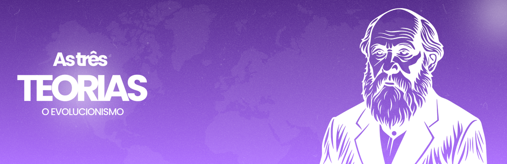

|  | ||
|
O estudo do evolucionismo busca compreender como as espécies surgiram, se modificaram e se diversificaram ao longo do tempo. Desde as primeiras ideias de Lamarck, passando pelas contribuições fundamentais de Darwin, até as descobertas da genética moderna, a teoria da evolução se consolidou como um dos pilares da biologia. Este espaço reúne informações sobre as principais teorias, seus autores e a importância desse conhecimento para entendermos a diversidade da vida na Terra.
Jean-Baptiste de Lamarck (1744–1829) foi um dos primeiros naturalistas a propor uma explicação organizada para a transformação dos seres vivos. Segundo ele, os organismos não eram fixos, mas podiam mudar ao longo da vida para se adaptar ao meio ambiente. A teoria de Lamarck baseava-se em dois princípios centrais: a lei do uso e desuso e a herança dos caracteres adquiridos. Na lei do uso e desuso, Lamarck afirmava que órgãos muito utilizados se desenvolviam, enquanto os pouco utilizados se atrofiavam. Já a herança dos caracteres adquiridos dizia que essas mudanças poderiam ser transmitidas para os descendentes. O exemplo clássico usado para ilustrar sua teoria é o pescoço das girafas: elas teriam alongado o pescoço ao esticá-lo constantemente para alcançar folhas mais altas, e esse traço teria sido passado de geração em geração. Embora atualmente se saiba que características adquiridas não podem ser herdadas, a teoria de Lamarck teve grande importância histórica por introduzir a ideia de transformação das espécies. Lamarck organizou sua explicação em torno de dois movimentos complementares. O primeiro é uma tendência inerente dos seres vivos a se complexificarem progressivamente uma força que, segundo ele, leva a organização dos organismos a níveis cada vez mais elevados. O segundo é a influência direta do ambiente sobre os hábitos e órgãos dos indivíduos, de modo que o uso contínuo de uma estrutura a fortalece e amplia, e o desuso a atrofia. Essas duas ideias juntas formam o núcleo do transformismo lamarckiano: organismos tendem a aumentar sua complexidade ao longo das gerações, ao mesmo tempo em que se adaptam às condições locais por modificações adquiridas no uso dos órgãos. No coração do mecanismo lamarckiano está a noção prática: quando um órgão é intensamente utilizado por um indivíduo (por necessidade, comportamento ou hábito), esse órgão se desenvolve ou se modifica funcionalmente; quando deixa de ser utilizado, regredirá. Lamarck imaginava que esse processo ocorria de forma gradual durante a vida do organismo, por repetição de ações e por alterações na atividade dos órgãos. Para ele, era natural pensar que um animal que se exercita ou que explora um novo tipo de recurso alimentar molda seu corpo em função desses hábitos. Uma peça crucial da teoria é a ideia de que essas modificações individuais seriam transmitidas aos descendentes. Lamarck admitia que a prole nasceria já com uma tendência ou com um grau de desenvolvimento da estrutura correspondente às mudanças que seus progenitores haviam adquirido. Nessa visão, a história de uma linhagem é a soma das transformações gradativas que ocorreram em cada geração, sempre dirigidas pela experiência e pelo uso das partes corporais. Para Lamarck, o ambiente não atua apenas como um cenário neutro: ele cria novas necessidades nos organismos. Mudanças no habitat, na disponibilidade de alimentos ou nos modos de vida forçam os seres a adotarem comportamentos diferentes — e esses comportamentos, por sua vez, provocam modificações corpóreas resultantes do uso ou do desuso. Assim, a relação organismo–meio é dinâmica: o ambiente induz mudanças de hábito, que induzem mudanças morfológicas. Lamarck usou vários exemplos concretos para ilustrar sua lógica. O mais famoso é o das girafas: um esforço repetido para alcançar folhas altas levaria ao alongamento do pescoço; esse alongamento seria então herdado pelas gerações seguintes. Outros exemplos que ele e seus contemporâneos citavam incluem animais que perdem olhos em cavernas por desuso, aves que perdem a capacidade de voar quando passam a viver em ilhas sem predadores e animais aquáticos cujas nadadeiras se transformam por uso contínuo. Em todos esses exemplos, a chave é a sequência: necessidade → alteração de hábito → uso/desuso de um órgão → modificação → herança. A transformação proposta por Lamarck é essencialmente gradual e contínua. Não há, em seu esquema, grandes saltos súbitos; ao contrário, mudanças acumulam-se pequenas em pequenas etapas ao longo de muitas gerações. Essa ênfase no acúmulo lento de pequenas alterações faz da sua teoria uma narrativa de progresso morfológico contínuo, em que as formas vivas se deslocam ao longo de uma trajetória ordenada. Lamarck concebia a natureza organizada em graus de complexidade, de formas simples a formas mais complexas. Mesmo ao admitir que o ambiente podia produzir adaptações específicas, ele mantinha a ideia de uma escala natural pela qual os organismos podiam ascender conforme se tornavam mais organizados. Essa visão de gradação ajudou-o a construir mapas de parentesco e sucessão entre grupos, dentro de sua lógica transformista. Para fundamentar suas ideias, Lamarck recorreu a observações de organismos vivos e ao registro de fósseis. Ele tentava conectar formas antigas a formas recentes através de linhas de transformação plausíveis, imaginando trajetórias em que órgãos se modificavam em resposta a mudanças nos modos de vida. O uso de dados observacionais foi uma característica importante de sua abordagem: ele não falou apenas em abstrações, mas procurou exemplos naturais que ilustrassem seus princípios. Dentro do sistema lamarckiano, certas previsões seguem logicamente: se o uso prolongado de um órgão sempre o modifica e essa modificação é herdada, então populações que adotem novos hábitos tendem a exibir, em poucas gerações, diferenças morfológicas correlacionadas a esses hábitos. Também decorre que ambientes homogêneos e estáveis produzirão menos mudanças em uma população do que ambientes que forcem novos comportamentos. Essas são consequências diretas do motor causal que Lamarck propôs. Mesmo sem compará-lo a outras teorias, o próprio arcabouço lamarckiano precisa assumir que as modificações adquiridas são, de fato, conservadas entre gerações e que o uso/desuso produz alterações funcionais estáveis. Isso exige uma espécie de relação íntima entre alterações somáticas (do corpo) e material reprodutivo, premissa que está embutida no modelo e que determina sua aplicabilidade. Na prática, a teoria de Lamarck era muito empregável como ferramenta explicativa simples: diante de um fato natural — um órgão desenvolvido ou atrofiado —, a explicação via uso/desuso e herança parecia imediata e inteligível ao observador comum. Essa clareza fez com que suas ideias circulassem amplamente e se tornassem argumentos fáceis de comunicar quando se buscava ligar comportamento e forma. Em suma, a teoria de Lamarck constrói uma explicação coerente e fechada sobre como as espécies se modificariam ao longo do tempo: existe uma tendência inata à complexificação, o ambiente impõe necessidades que mudam hábitos, o uso e o desuso remodelam órgãos e essas modificações são transmitidas aos descendentes. Dentro desse quadro conceitual específico, Lamarck oferece um sistema explicativo completo — com suas regras, exemplos e previsões — que fornece ao leitor uma visão unificada de transformismo natural. Charles Darwin (1809–1882), após longas viagens de observação e anos de estudo, formulou a teoria da evolução por seleção natural, apresentada em sua obra A Origem das Espécies (1859). Para Darwin, dentro de uma mesma espécie existem variações naturais entre os indivíduos. Quando ocorre a luta pela sobrevivência devido a recursos limitados ou mudanças no ambiente, aqueles que possuem características mais vantajosas têm maiores chances de sobreviver e se reproduzir. Com o tempo, essas características vão se tornando mais comuns na população. Darwin também destacou o papel da reprodução diferenciada, chamada de “seleção sexual”, que favorece traços que aumentam as chances de acasalamento. Um dos exemplos mais famosos das observações de Darwin foram os tentilhões das Ilhas Galápagos, que desenvolveram diferentes formatos de bico de acordo com o tipo de alimento disponível em cada ilha. Apesar de Darwin não conhecer os mecanismos genéticos que explicavam a origem dessas variações, sua teoria forneceu a base sólida para o estudo científico da evolução. A teoria de Darwin funda-se em algumas noções simples, porém poderosas: variabilidade entre os indivíduos de uma mesma espécie, luta pela existência devido a recursos limitados e seleção natural atuando sobre essa variabilidade. Para Darwin, não há um propósito pré-definido que direcione a evolução; em vez disso, as pressões ambientais funcionam como um filtro indivíduos com características que aumentam sua chance de sobreviver e reproduzir tendem a deixar mais descendentes, e assim essas características tornam-se mais frequentes na população ao longo do tempo. O mecanismo central é relativamente direto: nasce uma população com variações individuais; o ambiente impõe desafios (predação, falta de alimento, clima etc.); certos traços conferem vantagem nesses desafios; indivíduos portadores desses traços sobrevivem e têm mais descendentes; por acúmulo geracional, a população muda. Esse processo não exige previsão consciente nem direção interna — é consequência da interação entre variação e condições ambientais. Darwin enfatizou que a variabilidade é a matéria-prima da seleção. Pequenas diferenças individuais em tamanho, estrutura, comportamento ou fisiologia — podem parecer irrelevantes num dado momento, mas, se conferirem qualquer vantagem numa situação particular, tornam-se cruciais. A variabilidade pode ter origens diversas (mutualmente incompreendidas por Darwin em sua época), mas, do ponto de vista darwiniano, sua existência é suficiente para que a seleção opere. Além da seleção natural clássica ligada à sobrevivência, Darwin apresentou a seleção sexual como um mecanismo que favorece traços que aumentam o sucesso na obtenção de parceiros. Características vistosas, canções elaboradas ou comportamentos de exibição podem reduzir a sobrevivência, mas são mantidos ou acentuados porque aumentam a probabilidade de reprodução. Essa ideia explica por que certos traços aparentemente “custosos” persistem em populações. No quadro darwiniano, a formação de novas espécies (especiação) ocorre quando populações de um mesmo grupo ficam isoladas geograficamente ou por outros impedimentos reprodutivos e passam a acumular diferentes variações sob pressões seletivas distintas. Com o tempo, essas diferenças se tornam tão grandes que o cruzamento entre os grupos deixa de produzir descendentes férteis ou deixa de ocorrer naturalmente, consolidando duas espécies distintas. Darwin propôs um modelo gradualista: mudanças pequenas e acumulativas ao longo de muitas gerações dão origem a adaptações complexas. Não há, nesse esquema, saltos miraculosos; adaptações altamente elaboradas surgem por etapas sucessivas, cada uma conferindo uma vantagem seletiva mínima que é preservada e eventualmente ampliada. As observações de campo e de coleções naturalistas foram fundamentais para Darwin. Ele usou exemplos como os tentilhões das ilhas que mostravam variações adaptadas a alimentos locais, a diversidade de formas entre espécies relacionadas e casos de adaptação aparente à dieta e ao modo de vida. Esses exemplos serviam para tornar a teoria plausível e palpável: a seleção natural podia ser vista como um processo que “esculpia” formas funcionais a partir da variabilidade existente. Darwin combinou observação direta, coleta de espécimes, cruzamentos experimentais modestos e síntese de dados distribuídos por diferentes ramos da biologia. Seu método era empírico e indutivo: reunir fatos, identificar padrões e propor um mecanismo que explicasse a regularidade dos padrões observados. O livro que apresentou sua teoria contém muitos exemplos e argumentos destinados a mostrar que a seleção natural é um explicador consistente para a diversidade biológica. A partir do motor causal darwiniano decorrem previsões testáveis: em ambientes que mudam, populações devem apresentar mudanças adaptativas; em ilhas isoladas, taxa de especiação tende a ser maior; traços que aumentam o sucesso reprodutivo tenderão a persistir mesmo que impliquem custos de sobrevivência razoáveis. Essas previsões tornam a teoria falsificável em princípio e fornecem caminhos práticos para investigações empíricas. Darwin reconheceu lacunas em sua teoria, especialmente quanto à origem da variabilidade hereditária e ao mecanismo preciso de transmissão dos traços. Sem uma explicação robusta da hereditariedade, algumas perguntas permaneciam abertas dentro do próprio sistema teórico: de onde surgem as variações vantajosas e como são preservadas com fidelidade nas gerações? Essas limitações são internas ao darwinismo clássico não invalidam o mecanismo da seleção, mas mostram áreas em que o modelo estava incompleto. Uma das forças da teoria é sua modularidade: mesmo com questões abertas sobre hereditariedade, o núcleo — variabilidade + seleção — continua operando como explicação eficaz para muitos fenômenos. Esse caráter robusto permitiu que a teoria se mantivesse como arcabouço explicativo, porque novas descobertas podem ser integradas às suas operações centrais sem que o mecanismo fundamental perca coerência. A teoria de Darwin tem grande valor didático por oferecer uma narrativa plausível e testável da origem das adaptações. Nem sempre é intuitiva para quem pensa em design consciente; ainda assim, sua lógica de filtro seletivo é direta e aplicável a múltiplos casos, o que facilita sua transmissão em contextos educacionais e de divulgação científica. A concepção darwiniana orientou práticas científicas: estudos comparativos, experimentos sobre seleção em populações, observações de campo para identificar pressões seletivas e análise de padrões de especiação. Fora da biologia estrita, a ideia de seleção natural também influenciou outras áreas que analisam mudança por variabilidade e filtragem (embora essas aplicações devam ser feitas com cautela). Dentro de sua própria lógica, a teoria de Darwin oferece um sistema explicativo claro e poderoso: parte da existência de variação, coloca a seleção natural como agente formador e prevê processos de acumulação gradual que resultam em adaptações e, eventualmente, em novas espécies. As lacunas que o próprio Darwin assinalou sobretudo sobre hereditariedade não enfraquecem o núcleo conceitual; ao contrário, apontam direções para investigação científica e enriquecem a teoria como um programa de pesquisa frutífero. Com o avanço da genética, no início do século XX, foi possível unir as ideias de Darwin com as descobertas de Gregor Mendel sobre hereditariedade. Esse conjunto de conhecimentos formou a Teoria Sintética da Evolução, também conhecida como neodarwinismo. Ela explica a evolução a partir da interação de vários fatores, sendo os principais: A Teoria Sintética da Evolução integra as ideias de seleção natural de Darwin com a genética mendeliana, formando um quadro explicativo em que a unidade de evolução é a população e a matéria-prima da mudança é a variação genética. Em vez de trabalhar com indivíduos isolados, o neodarwinismo explica como frequências de alelos variam ao longo do tempo sob a ação conjunta de vários processos — a seleção natural é um deles, mas não o único. No centro está a noção de que características hereditárias são codificadas por genes e alelos, cujo comportamento em cruzamentos segue regras mendelianas. Mutações introduzem novas variantes no pool gênico; a recombinação durante a reprodução sexual mistura essas variantes; e a segregação mendeliana garante que a herança seja transmitida com certa previsibilidade. Assim, a síntese transformou a ideia de "variação" de algo vago em quantidades mensuráveis em termos de genótipos e fenótipos. Além da seleção natural, a Teoria Sintética reconhece outros motores importantes: Fonte primária de nova variabilidade genética; podem ser neutras, deletérias ou vantajosas. Cria novas combinações de alelos, ampliando a diversidade potencial sobre a qual a seleção pode atuar. Flutuações aleatórias nas frequências de alelos, especialmente relevantes em populações pequenas. entrada ou saída de alelos entre populações que pode homogenizar ou introduzir variação local. Atuam em níveis diferentes, respectivamente favorecendo sucesso reprodutivo e sobrevivência. Esses processos interagem de modo a explicar tanto as adaptações quanto as mudanças neutras ou aleatórias observadas nas populações. Um avanço crucial da síntese foi a formalização matemática da evolução: modelos de genética de populações (p. ex. equilíbrio de Hardy–Weinberg, equações para mudança de frequência alélica, modelos de seleção e deriva) permitiram prever como diferentes forças alteram a composição genética. Essa quantificação transformou a evolução em uma ciência preditiva: mudanças em frequência alélica podem ser calculadas e comparadas com dados empíricos. A síntese desenvolveu explicações detalhadas para a especiação, destacando mecanismos como isolamento geográfico (alopátrico), isolamento reprodutivo e acumulação de diferenças genéticas que impedem o cruzamento ou reduzem a fertilidade dos híbridos. Também foram explorados cenários periféricos (peripátricos) e, em menor grau, possibilidades de especiação simpátrica quando seleção disruptiva e restrições de acasalamento atuam fortemente. Intelectualmente, a Teoria Sintética consolidou resultados de disciplinas antes desconectadas: seleção natural (biologia evolutiva), genética (hereditariedade), sistemática (relações entre espécies), paleontologia (registro fóssil) e biogeografia (distribuição de organismos). Essa integração foi o que deu ao neodarwinismo sua força explicativa e sua aceitação ampla na comunidade científica do século XX. A síntese é suportada por múltiplas linhas de evidência: padrões genéticos em populações naturais, experimentos de seleção em laboratório, registros fósseis que mostram transições morfológicas, dados biogeográficos coerentes com especiação e diferenças genéticas correlacionadas com isolamento reprodutivo. A convergência dessas evidências em domínios diferentes é uma das grandes forças do quadro sintético. A teoria gera previsões claras: por exemplo, em condições de seleção direcional uma frequência alélica vantajosa tende a aumentar; populações isoladas devem divergir geneticamente com o tempo; e a variabilidade genética necessária para resposta adaptativa deve correlacionar-se com a capacidade de uma população se adaptar a mudanças ambientais. Essas previsões permitem testar hipóteses com dados genéticos e ecológicos. Embora robusta, a síntese clássico-neodarwiniana tem limites internos que foram identificados ao longo do tempo: Ao invés de abandonar a síntese, a biologia evolutiva incorporou novas camadas: genética molecular, análise de DNA antigo, teoria neutra, estudos de evo-devo e ecologia evolutiva expandiram e refinaram o quadro, mantendo a estrutura central — variação genética + processos que alteram frequências alélicas — como seu núcleo explicativo. Essas extensões mostram a adaptabilidade do paradigma sintetizado. O neodarwinismo orienta áreas aplicadas: melhoramento genético, manejo de resistência (em pragas e microrganismos), conservação de populações através da manutenção de variabilidade genética, e compreensão da evolução de patógenos. Por traduzir a evolução em termos genéticos e populacionais, ele tornou possível intervenções informadas em contextos reais. A Teoria Sintética da Evolução é uma síntese poderosa que transforma a ideia darwiniana de seleção natural numa teoria quantitativa e integradora, baseada em genética de populações. Ao articular mutação, recombinação, seleção, deriva e fluxo gênico num mesmo quadro, ela fornece explicações detalhadas para adaptação, diversificação e especiação. Internamente coerente e empiricamente testável, a síntese constituiu (e continua a constituir) a espinha dorsal da biologia evolutiva moderna, servindo tanto como guia teórico quanto como base para investigação experimental e aplicada. |
COLUNA DIREITA |